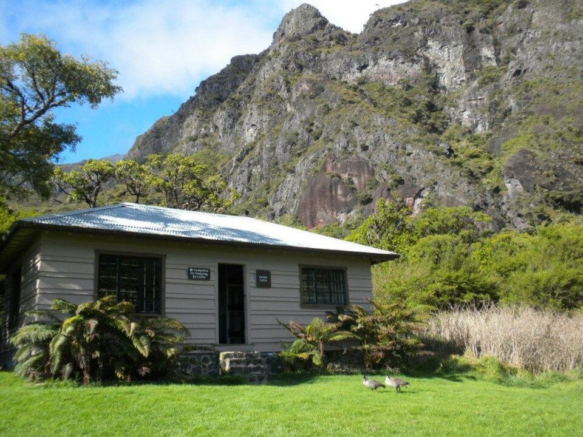

Palikū Cabin
Place: Palikū Cabin, Haleakalā National Park, Maui
Type: Wilderness cabin / crater landscape / historic shelter
Story it tells: A remote cabin whose name means “vertical cliff,” marking the lush eastern edge of Haleakalā Crater near Kaupō Gap.

Palikū Cabin is one of the remote wilderness cabins inside Haleakalā National Park. The name Palikū means “upright cliff” or “vertical cliff,” referring to the towering walls near Kaupō Gap and the eastern edge of the crater. After crossing the drier, open crater floor, hikers reaching Palikū encounter a strikingly different landscape: green cliffs, mist, rain, and vegetation. The shift is generally attributed to moisture carried by the trade winds.
The place name came long before the cabin itself. Palikū describes the geography of this corner of Haleakalā, where the crater floor meets steep, rain-catching walls. The name connects the area to older Hawaiian traditions and genealogical associations, making it more than a visual description of a cliff.
Before the current wilderness cabin was built, Palikū was used during the ranching era. Haleakalā Ranch and Maui paniolo moved cattle across the crater and through Kaupō Gap, using the greener Palikū area as pasture and shelter during difficult drives across the mountain. Earlier rough shelters, paddocks, and camps helped protect cowboys and livestock from the area’s frequent rain and offered a brief reprieve from the elements, much like the cabin does today.
The present cabin was built by the Civilian Conservation Corps in 1937 as part of a broader effort to support park access and wilderness travel. Today, Palikū Cabin is reached only by long hikes, including routes from Keoneheʻeheʻe, also known as Sliding Sands, or from Halemauʻu. Its remoteness helps preserve the sense of arrival that has long defined the place.
Palikū reflects one of Haleakalā’s sharpest contrasts. It is both a historic shelter and a named landscape where dry crater, wet cliff, Hawaiian place memory, and paniolo history all intersect at the top of Kaupō Gap.